Developer & Designer
Hi, I'm Dylan.
I build web apps, design experiences, and collaborate on projects that matter — from capstone platforms to client websites.

Developer & Designer
I build web apps, design experiences, and collaborate on projects that matter — from capstone platforms to client websites.
A mix of client work, apps, and collaborative builds.
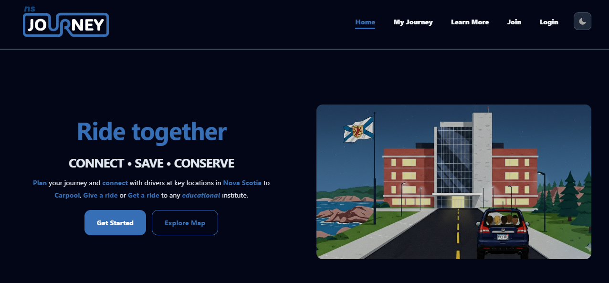
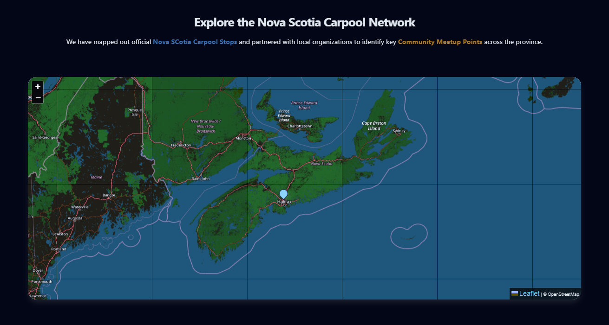
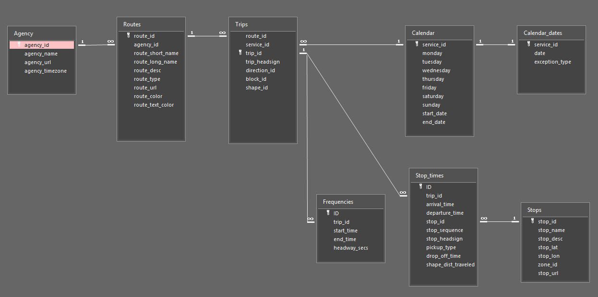
Capstone
A collaborative rideshare platform developed at NSCC. Connects drivers and passengers within the campus community, with real-time matching, route planning, and user profiles.
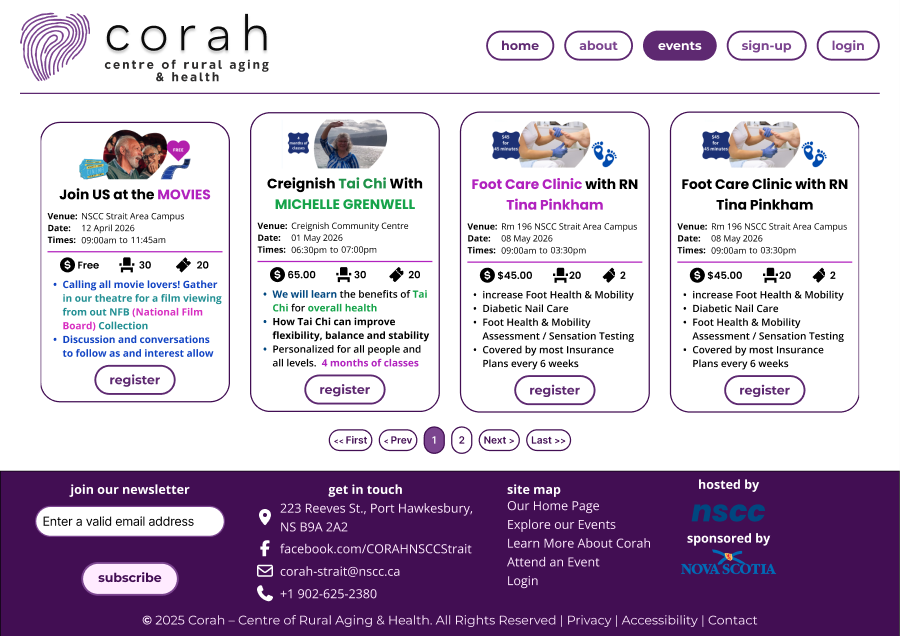
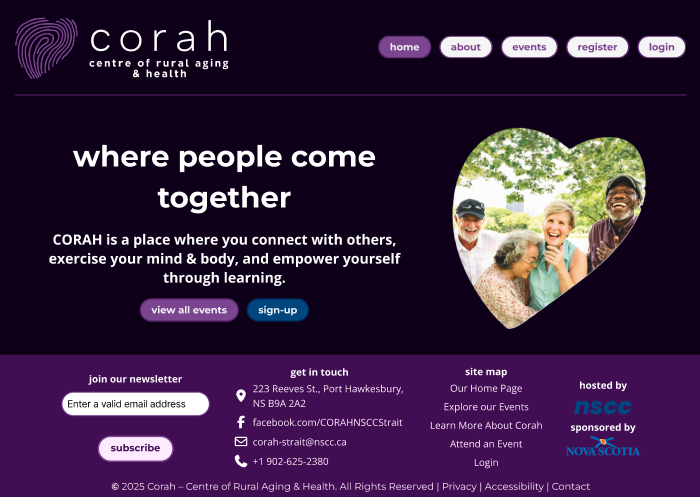
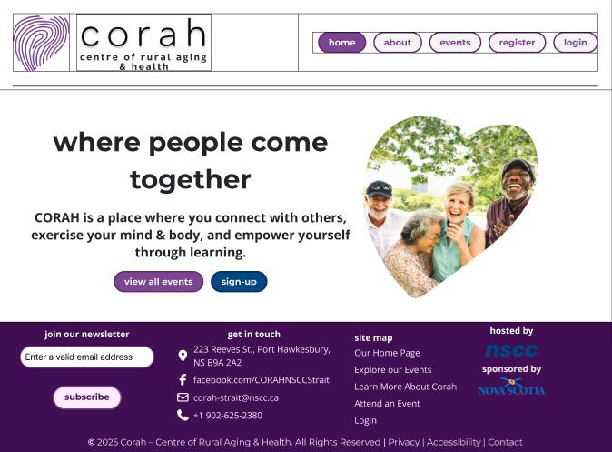
Django + Tailwind
An event booking web app built for CORAH (Center of Rural Aging and Health), a community hub and active living centre that promotes health and wellbeing for people 55 years of age plus. Allows staff to manage events and seniors to register, built with Django and styled with Tailwind CSS.
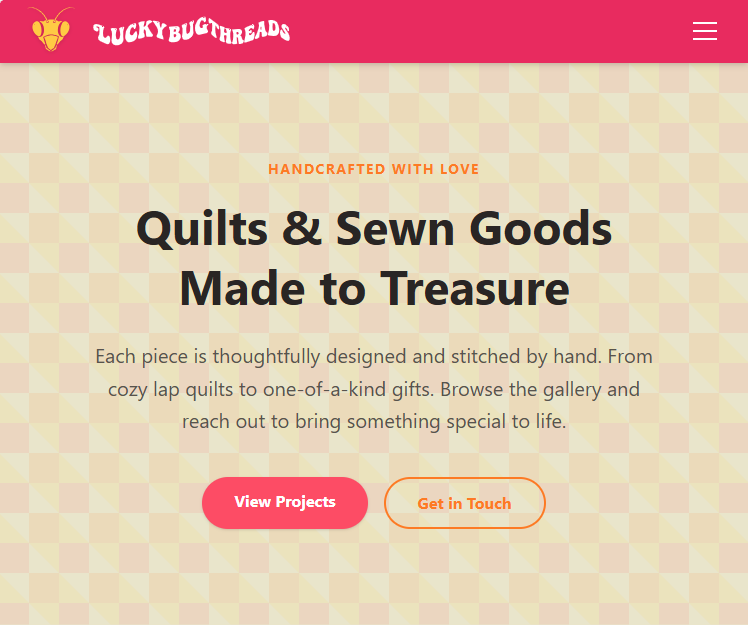
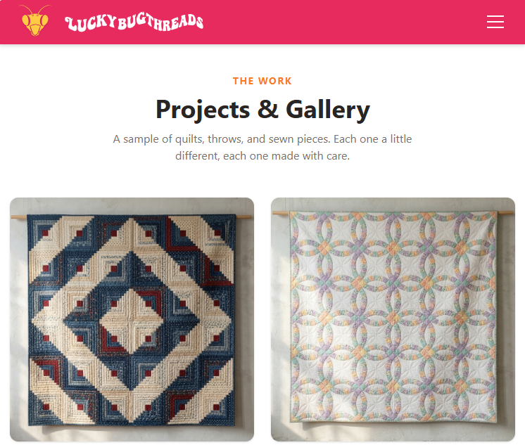
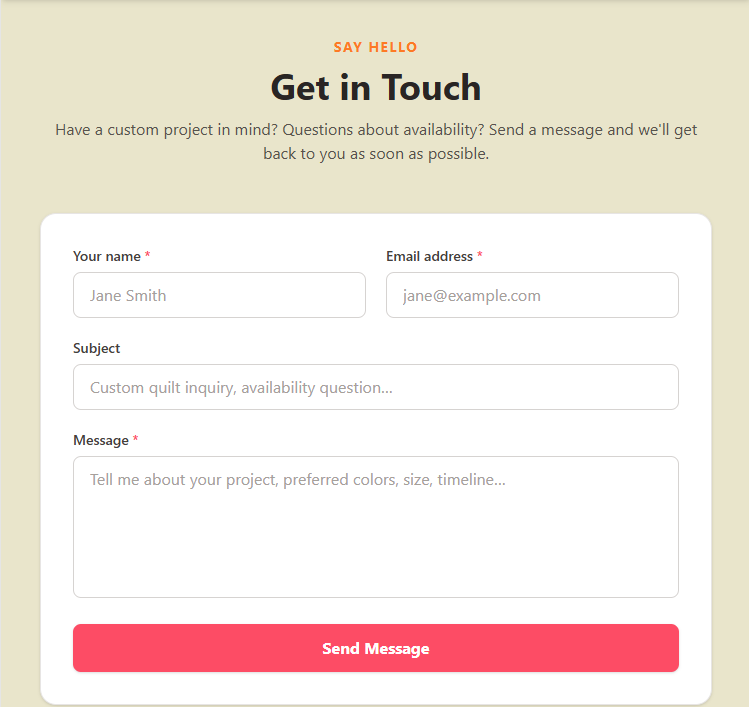
Web Presence
A clean, modern web presence site built for a friend's sewing brand. Designed and developed in an afternoon, showcasing what a fast, focused client build can look like.
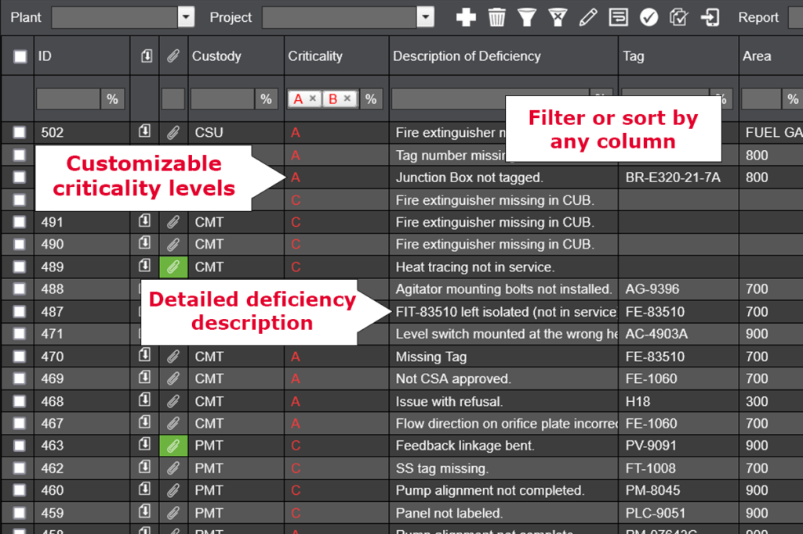
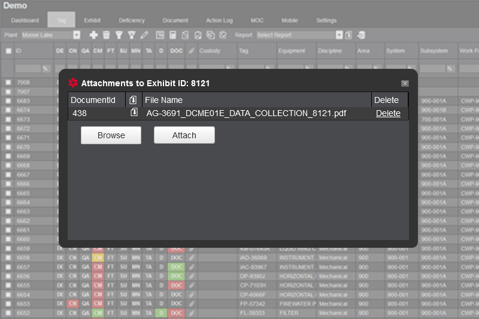
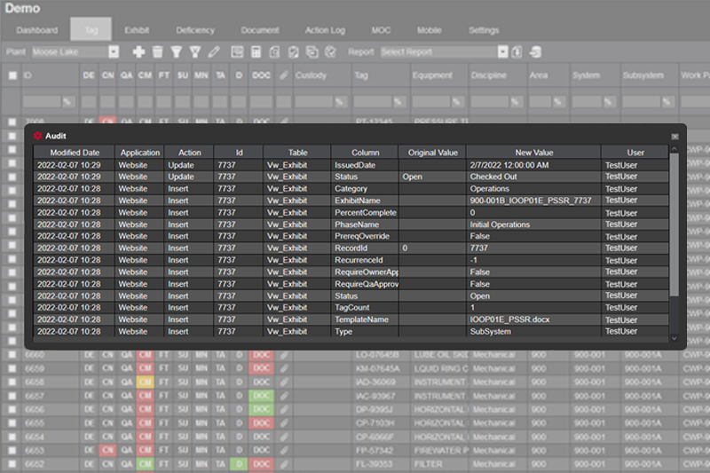
Data Analyst, Software Development Team
Bespoke software/Project-based SaaS. Spent 4+ years on this project (as well as the various projects where we implemented the software in production scenarios) not as a technical developer but as the person in between. Gathered client requirements, communicated them to the dev team, tested builds against real user needs, and flagged the gaps. The software continued development after my time on it and is still active today.
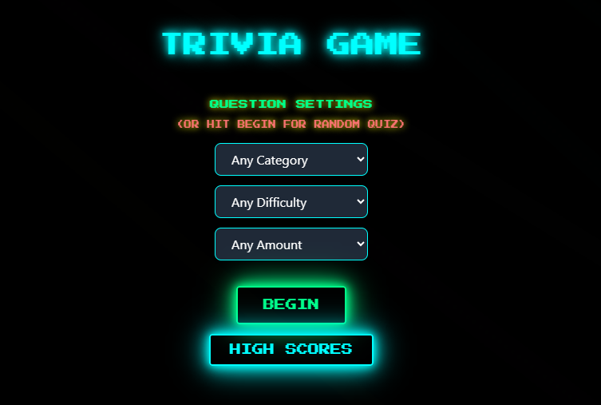
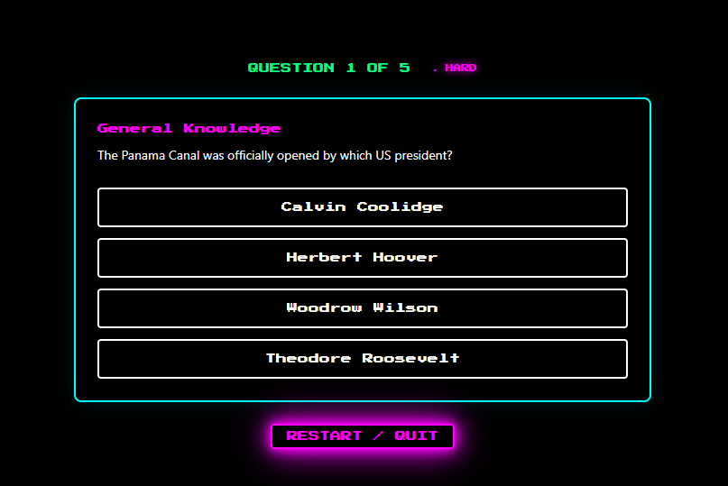
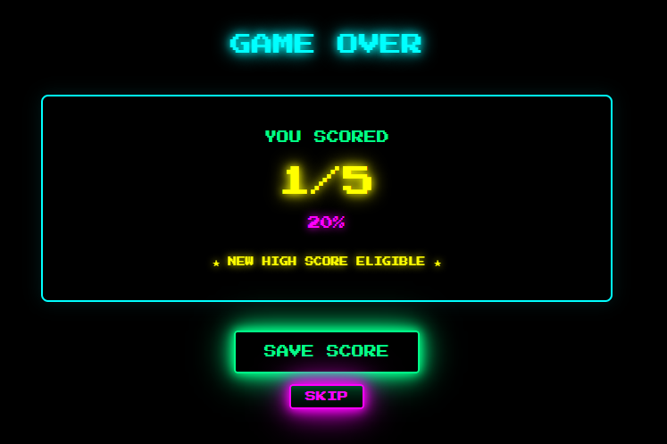
Interactive App
A trivia game built in React featuring multiple categories, score tracking, and a fast-paced question flow. My first venture into React, A fun project that deepened my understanding of React state and component design.
I have been behind a keyboard for over 30 years. It started as curiosity when I was a kid and never really stopped. Computers were always the thing I gravitated toward, even when my career went in other directions.
Those directions included running a music store for three years, customer service, operations, and a stretch doing technical consulting where I sat between software developers and the clients they were building for. That last one involved a fair amount of systems thinking, requirement gathering, and learning how quickly things go sideways when communication breaks down. Different industries, but the same thread running through all of it.
Eventually I decided to come back to the technical side properly. I went back to school, and here I am finishing a capstone project, picking up freelance work, and genuinely enjoying the process of adding to the list of new things I can build and fix.
Frontend
Backend
Tools
Soft Skills